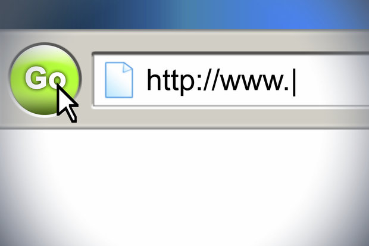

Primene(JavaScript)
Web programiranje
Osnovni primena Javascript programskog jezika je web programiranje. Pre nego što pregledač učita stranicu, mora stvoriti DOM i CSSOM stablo.
Pretrazivač analizira datoteku, zapravo analizira bajtove i stvarne znakove, a zatim kreira znak iz čvora čvora i od čvora do objekata.
HTML oznake se transformisu u Object Document Model (DOM), a CSS oznake u CSS Object Model (CSSOM).
DOM i CSSOM su nezavisne strukture i njihovim spajanjem stvoreno je stablo renderovanja, koje se zatim koristi za izračunavanje svojstava svakog vidljivog elementa, npr. veličinu elementa, boju pozadine, itd.
Optimizacija svakog od ovih koraka je ključna za postizanje optimalne performanse gledanja. DOM opisuje sadržaj, a CSSOM opisuje stil koji se koristi. Drvo rendera sadrži samo čvorove koji su potrebni za prikaz stranice i brine se o izgledu i tačnoj veličini svakog objekta.
Prilikom kreiranja stabla renderiranja, pregledac čini sljedeće:
-Pomera se iz korena DOM stabla i posećuje svaki vidljivi čvor.
-Neki čvorovi nisu vidljivi (npr., Skripta oznaka, meta oznake, itd.) I ne prikazuju ih u DOM stablu jer nisu vidljivi na stranici.
-Neki čvorovi su skriveni preko CSS-a (display: none) i nisu prikazani u DOM stablu
-Za svaki vidljivi čvor, pretraživač pronalazi odgovarajuća CSSOM pravila i primenjuje ih.

-Prikazuje vidljive čvorove sa sadržajem i stilizuje ih.
Upotreba na web stranicama
-Najčešća upotreba Javascript-a je dodavanje dinamike HTML koda na strani klijenta. Skripte su uključene u HTML stranicu i stupaju u interakciju s Object Modelom dokumenta.
Neki od primera korištenja Javascripta su:
-Učitavanje određenog dela stranice ili slanje podataka na server putem AJAX-a (AJAX) bez ponovnog ažuriranja cele stranice (na primer, društvena mreža vam omogućava da ažurirate novi status bez osvežavanja cele stranice).
-Animiranje elemenata na stranici, što ih čini vidljivim i nevidljivim, menja veličinu elemenata, pomera njihov sadržaj.
-Učitavanje interaktivnog sadržaja (kao što su videoisečci, animacije, videoigre, audio sadržaj ...)
-Potvrdite sadržaj da biste bili sigurni da su ispravni podaci poslani na server.
-Internet pretraživač je najčešće okruženje za izvršavanje Javascript koda. Internetski pregledaci obično kreiraju host objekte za predstavljanje objektnog modela dokumenata u Javascriptu.,
Pored Internet pretraživača, na serveru se može izvršiti i Javascript kod.